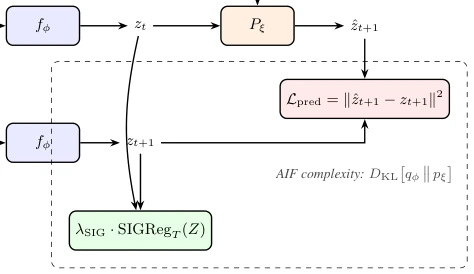
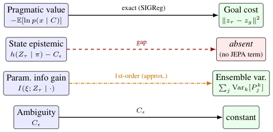

This paper gives the JEPA world model a "theoretical checkup", with a conclusion that is a bit painful: most currently active models (e.g., those using VICReg) actually do not calculate free energy correctly, belonging to "false prosperity". The author rigorously points out that only regularization like SIGReg that forces isotropic Gaussian distribution can turn the JEPA objective function into a valid Active Inference variational free energy. Other methods either have unsafe upper bounds or loose lower bounds. The highlight is establishing an exact correspondence relationship, and also pointing out that current JEPA lacks the "state cognitive value" link. The drawback is pure theoretical derivation, no experiments run, relying entirely on Lean 4 machine verification, which appears 'unappetizing' to engineers, but theoretical purity is extremely high, counting as laying a foundation for the self-supervised learning circle. In addition, it reveals the error accumulation mechanism in multi-step planning, providing theoretical boundaries for future planning algorithms.
研究动机Motivation
动机很明确：JEPA 作为主流隐变量世界模型，训练目标通常靠经验调参，缺乏像 Active Inference (AIF) 那样的规范性原则。现有工作如 VICReg [Bardes et al., 2022] 虽然防止表示坍缩，但只是熵的近似上界，导致自由能界可能失效。LogDet [Shwartz-Ziv et al., 2023] 稍好但仍不安全。PairDist [Kolchinsky and Tracey, 2017] 安全但不强制分布。作者想解决这个“理论断层”，证明为何 SIGReg [Balestriero and LeCun, 2025] 能让 JEPA 真正符合 AIF 框架，从而为规划提供坚实的认知价值基础，而非仅仅依赖启发式探索。
The motivation is very clear: JEPA as a mainstream latent variable world model, training targets usually rely on empirical parameter tuning, lacking normative principles like Active Inference (AIF). Existing work like VICReg [Bardes et al., 2022] although prevents representation collapse, but is only an approximate upper bound of entropy, leading to free energy bound possibly failing. LogDet [Shwartz-Ziv et al., 2023] slightly better but still unsafe. PairDist [Kolchinsky and Tracey, 2017] safe but does not enforce distribution. Author wants to solve this "theoretical gap", prove why SIGReg [Balestriero and LeCun, 2025] can make JEPA truly conform to AIF framework, thereby providing a solid cognitive value basis for planning, rather than merely relying on heuristic exploration.
Method core is constructing "prior mismatch gap" decomposition, aiming to quantify impact of different regularizers on AIF free energy bound. First define entropy estimator hierarchy, rank VICReg, LogDet, PairDist, SIGReg by gap source, reveal VICReg and LogDet are upper bound estimates, PairDist is lower bound but loose. Prove SIGReg can eliminate non-Gaussianity, non-diagonal covariance, and estimation error triple gaps, making objective function exactly equal to AIF free energy. Next establish single-step correspondence theorem, under constant noise model, SIGReg makes objective function exactly equal to AIF free energy. Extend to multi-step planning (Expected Free Energy), point out JEPA missing state cognitive value term. Finally verify algebra core via Lean 4 machine verification. Overall flow is: define gap -> prove SIGReg eliminates gap -> map AIF terms -> derive planning consequences. Specifically, this method distinguishes "safe" and "enforced" two dimensions, points out SIGReg is the only estimator possessing both simultaneously, providing exact cost function interpretation for JEPA planning.

Figure 1: The JEPA world-model loss read as an AIF variational free energy (main-text Theorem 1). The next-embedding prediction loss Lpred is, up to the 1/(2σ2) scale and the additive constant CKL of (4), the AIF complexity term (a KL divergence under the Gaussian bridge); the regulariser is the AIF informativeness term. Under SIGReg the informativeness is enforced rather than estimated, so both terms are exact and the total is a valid free energy. Swapping SIGReg for VICReg changes only the regulariser box, but reopens the prior-miscalibration gap. The “exact free energy” reading holds only under the constant-noise encoder model (Fact 2) and successful SIGReg enforcement (pZ = N � 0, c
This paper belongs to pure theoretical derivation, does not include dataset or baseline experiments in traditional sense. Author states empirical verification will be left for future work (Abstract). Main verification means is mathematical proof, and algebra core has passed Lean 4 theorem prover machine verification (Appendix D). "Experiments" mentioned in text are actually theoretical predictions, such as embedding condition number κ≈1 vs κ≫1 distinction, and multi-step planning error order analysis. Although no RL tasks run, but cites LeWorldModel [Maes et al., 2026] etc. existing architectures as theoretical counterpart objects, and points out SIGReg external evidence on control stability (Pasand et al., 2026).
其他图片Other Figures

Figure 3: Term-by-term correspondence between the AIF expected free energy (left) and the JEPA world-model planning cost (right), as established in §A.5. Under SIGReg the pragmatic value maps exactly to the latent goal cost (Proposition A.7); the parameter information gain maps to ensemble variance at first order; ambiguity is a constant; and the state epistemic value (coverage) has no counterpart in any current JEPA world model: the primary structural gap (Proposition 6). The arrow style encodes the nature of each correspondence: solid black for exact mappings (under SIGReg), amber dash-dot for the first-order approximate mapping, and dashed red into the shaded box for the absent term.